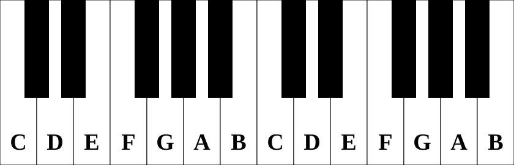

So far, we have learnt the letter names of the notes and their positions on the staff. We can say that two notes are neighbours, or a step away from each other if they are on consecutive staff positions.
But not all the steps are the same size. Some pairs of neighbours are closer than others.
The bigger steps are called a tone and the smaller steps are called a semitone. As the name suggests, a semitone is half the size of a tone.
In all of the notes we have learnt about so far, the steps E-F and B-C are semitones. All the other are tones.
The notes we have learnt about so far correspond to the white keys of the piano. On a piano keyboard, you can find the note C by going just to the left of a set of 2 black keys.

From this picture we can see that between two white keys, there is sometimes a black key. We will learn exactly what notes the black keys are a bit later, but for now notice that between E and F there is no black key, and between B and C there is no black key. This is because these are the semitone steps. Between every other pair of white keys, there is a black key.
So from the piano keyboard we see that there are some notes in between some of the white keys. That's where sharps and flats come in.
We can raise or lower the notes by using the sharp or flat symbol in front (meaning to the left) of the note. These symbols are called accidentals.
A sharp looks like this: and raises the pitch of a note by one semitone
A flat looks like this: and lowers the pitch of a note by one semitone.
There is another kind of accidental called a natural which is used to indicate that a note is not sharp or flat. We will see why this is sometimes required later.
A natural looks like this: and cancels the effect of any flat or sharp on that note.
The black keys on a piano keyboard correspond to the notes with sharps or flat. For example, the black key between F and G corresponds to the note F sharp or G flat. It is higher than the note F and lower than G.
Here is the keyboard with all the keys labelled:
An accidental will affect the note it is in front of and any other notes of the same pitch which come after it in the same bar.
If we want the second F not to be sharp, we need to put a natural in front of it.
Sometimes, a piece will require most of the F's to be sharp, or most B's to be flat, or most F's and C's to be sharp.
In these cases we will usually use something called a key signature. A key signature is a set of sharps or flats at the beginning of the staff, placed right after the clef.
A key signature with an F sharp means that all the Fs will automatically be sharp, unless otherwise stated (eg by a natural in front of the note.)
Those are just 3 examples of different key signatures. There are many more. You will learn more about them in the chapter on keys and scales.
We can also use accidentals to raise or lower a note by two semitones. This is done with a double-sharp or a double-flat.
| Double Sharp | Double Flat |
|---|---|
We can see from the picture of the labelled piano keyboard that the black keys can be named in two different ways, eg F sharp and G flat.
We say that they are enharmonic equivalents
You can think of this as two ways of spelling the same pitch. This doesn't mean you can just substitute one for the other, though. As you will see when you learn more about topics like intervals, scales and chords, most of the time, the staff position/letter-name of a note is important and one of the options will be the correct one.
By the way, it is not just the black-key notes that can be spelt different ways. It is true of any pitch. For example: C is also B#, A is also G double sharp and B double flat.